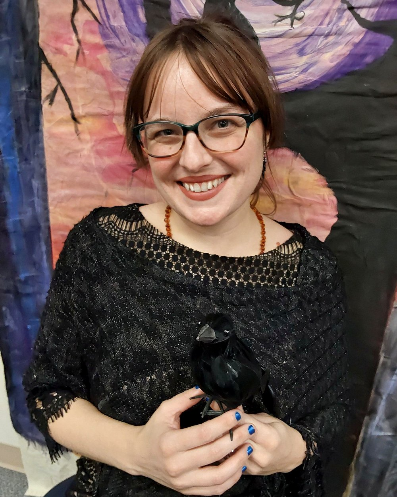
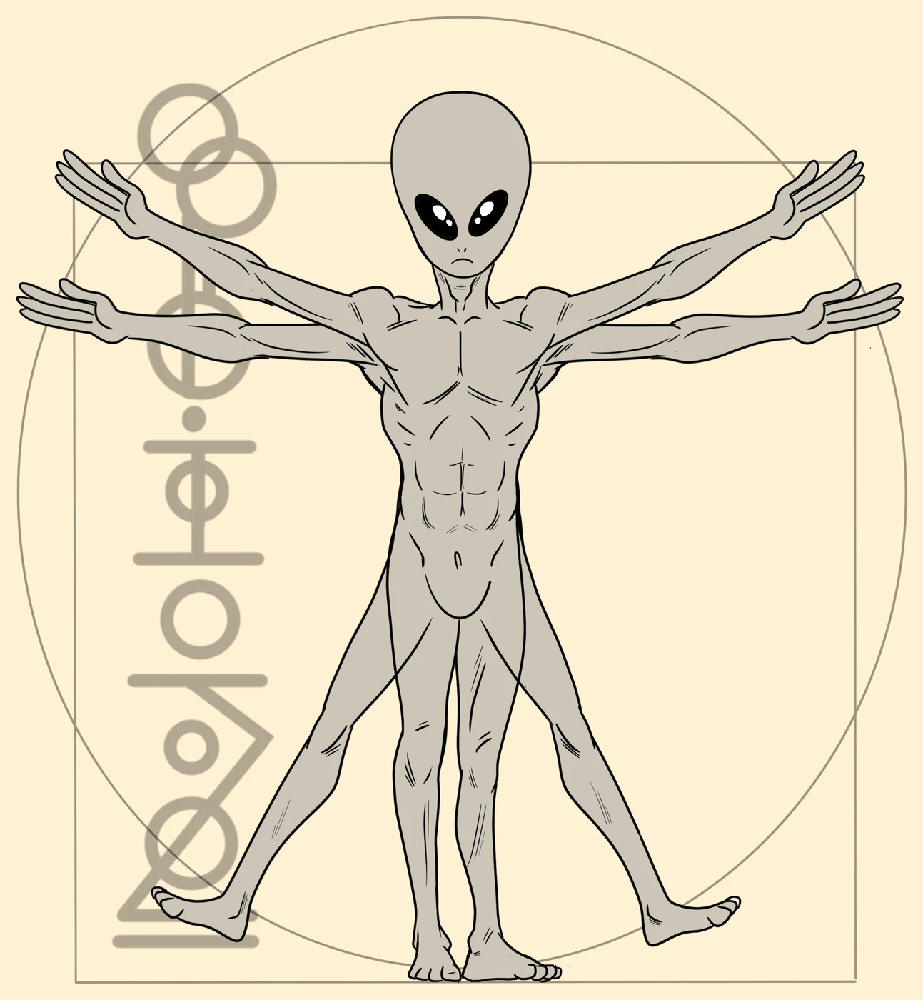

Who we are
Bipedal Press is an independent publisher in Hickory, North Carolina, with one aim: to illuminate good ideas and brilliant authors.
We work with writers collaboratively, from first edit to final cover, to pull the strange out of the void and bring it into focus.
Why Bipedal exists
Good books fall into the void every day.
Too strange, too sharp, too hard to file under one label. We started Bipedal Press to pull them out and bring them into focus.
Here, authors are collaborators. You’ll work directly with us on the edit, the cover, and the look of the book, and you’ll always know where things stand. Your name and your voice stay at the center of everything we make.
That’s the whole idea: a press that illuminates brilliant authors and the strange, wonderful ideas they carry.
Meet The Other
The Other is our mascot, part human, part alien, and a manifestation of everything that lies unseen, unnoticed, unappreciated, and unrepresented in the world. It’s why we do this: to bring those voices into the light.
The glyphs in our logo spell “bipedal.”

Courtney F., Founder & Editor
The human behind Bipedal Press. Editor. Educator. Publisher.

The Other, Bipedal
Part human. Part alien. Entirely curious. A reminder that there’s always another way to look at the world.
Got something unclassifiable?
We’d love to read it. No fees, fair royalties, and a reply within two days.